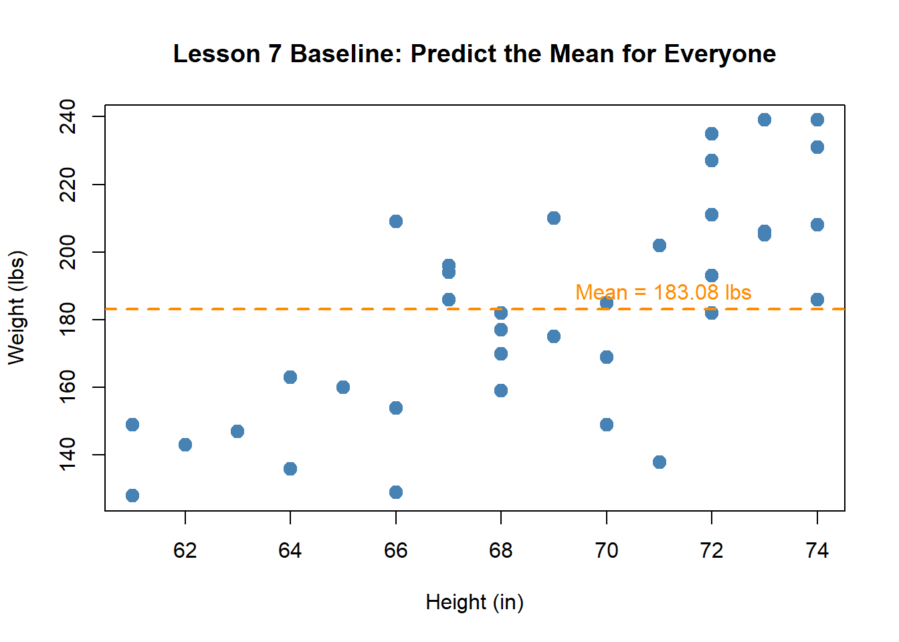
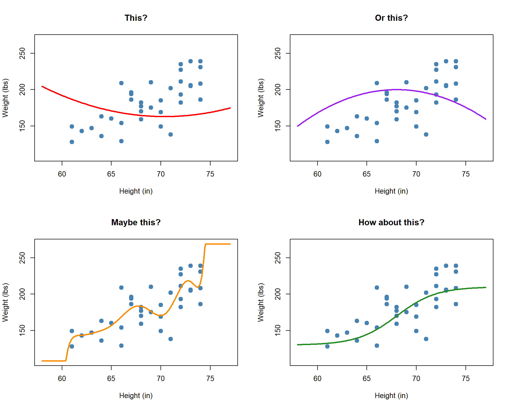
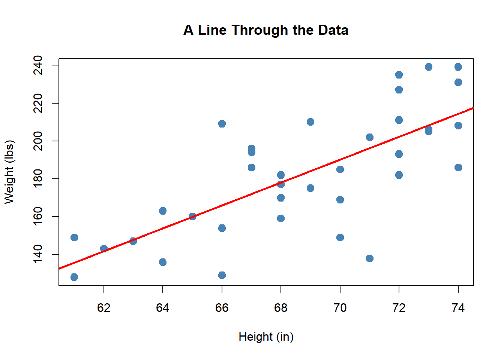
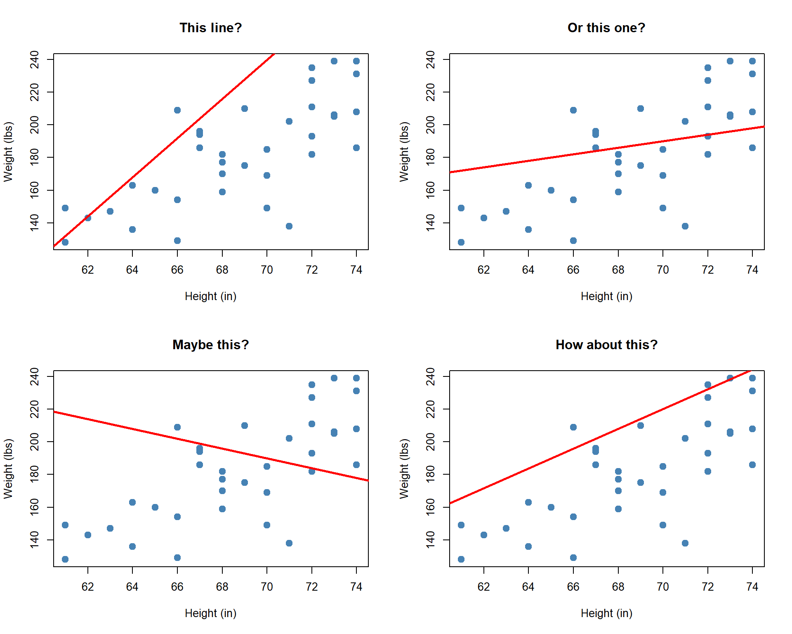
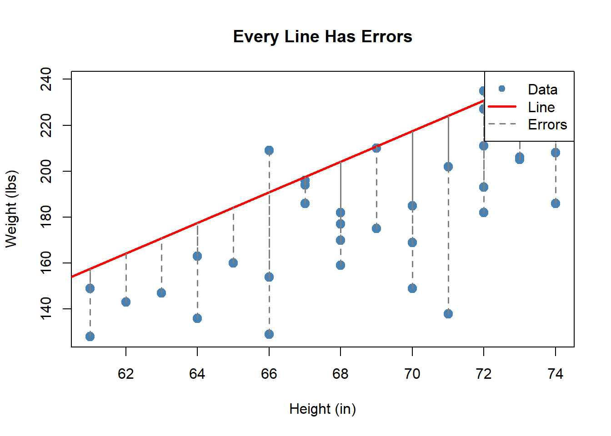
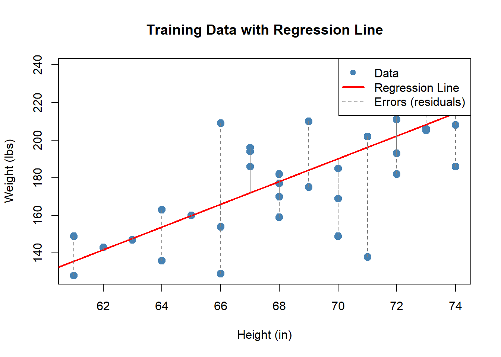

Linear Regression I
MA153X Mathematical Modeling — Lesson 8
Lesson 8: Linear Regression I
NoteDownloads
Objectives
- Explain the purpose of simple linear regression as a predictive modeling tool.
- Identify situations where simple linear regression is an appropriate model.
- Create a simple linear regression model in Excel using a training set.
- Interpret the slope and intercept of a linear regression model in context. (moved from Lesson 9)
- Interpret \(R^2\) for a linear regression model built on training data. (moved from Lesson 9)
Review: Where We Left Off
In Lesson 7, you used the mean as a baseline predictor. Here is real ACFT data from a company in the 20th Engineer Brigade — can we predict a soldier’s Weight from their Height?
The mean predicts \(\bar{y} = 183.08\) lbs for every soldier — but the scatter shows a clear trend. Taller soldiers tend to weigh more. Can we do better?
What Shape Should Our Model Be?
We know the mean is too simple. But what model should we use? There are lots of curves we could draw through this data:

The data doesn’t curve back up or wiggle — it follows a roughly straight-line trend. Maybe a line is a better option:

This looks like it captures the trend well. But how do we find the best line? That is what simple linear regression does.
The Modeling Decision: Why Linear?
NoteJustifying the Choice of a Linear Model
Before fitting a model, we must justify our choice. Reading 2.2 describes four assumptions for simple linear regression:
- Linearity: The relationship between \(x\) and \(y\) is approximately linear.
- Independence: The observations are independent of each other.
- Constant variance: The spread of \(y\) values is roughly the same for all values of \(x\).
- Normality: The errors are approximately normally distributed.
We justify the linearity assumption by examining the scatter plot — does it show a reasonably straight-line pattern? For this data, the answer is yes.
The correlation between Height and Weight also supports this:
\[r = 0.7294\]
TipRecall from Reading 1.5
A strong positive correlation (close to \(+1\)) supports the existence of a linear relationship, but correlation alone does not prove linearity — we must always check the scatter plot. Correlation supports but does not replace visual inspection.
The Simple Linear Regression Model
But which line? We could draw many different lines through this data:

Every one of these lines follows the same formula:
\[\hat{y} = \hat{\beta}_0 + \hat{\beta}_1 x\]
where \(\hat{\beta}_0\) is the intercept (where the line crosses \(y\) when \(x = 0\)) and \(\hat{\beta}_1\) is the slope (how much \(\hat{y}\) changes for each one-unit increase in \(x\)). Different choices of \(\hat{\beta}_0\) and \(\hat{\beta}_1\) give different lines.
But none of these lines hit every data point exactly. Each point has an error — the vertical distance between the actual value and the line:

So the real model is:
\[y = \hat{\beta}_0 + \hat{\beta}_1 x + \text{error}\]
The question is: which values of \(\hat{\beta}_0\) and \(\hat{\beta}_1\) make these errors as small as possible?
Least Squares: Finding the Best Line
ImportantThe Least Squares Method
The “best” line is the one that minimizes the sum of squared errors (SSE):
\[\text{SSE} = \sum_{i=1}^{n} (y_i - \hat{y}_i)^2 = \sum_{i=1}^{n} (y_i - \hat{\beta}_0 - \hat{\beta}_1 x_i)^2\]
The formulas for the least squares estimates are:
\[\hat{\beta}_1 = \frac{\displaystyle\sum_{i=1}^{n}(x_i - \bar{x})(y_i - \bar{y})}{\displaystyle\sum_{i=1}^{n}(x_i - \bar{x})^2} \qquad \qquad \hat{\beta}_0 = \bar{y} - \hat{\beta}_1 \bar{x}\]

The dashed gray lines show the errors (residuals) — the vertical distance between each data point and the line. Least squares finds the line that makes the total squared error as small as possible.
TipOur Model
From the training data:
\[\hat{y} = -233.2 + 6 \cdot x\]
where \(x\) = Height (in) and \(\hat{y}\) = predicted Weight (lbs).
Building the Model in Excel: Method 1 — Trendline
Let’s build this live. The training data is in the workbook below:
NoteExcel Instructions: Trendline Method
- Enter the training data in two columns: Height (\(x\)) and Weight (\(y\)).
- Select cells B1:C38 (Height and Weight columns only) and go to Insert -> Chart -> XY (Scatter).
- Adjust the axis bounds so the data fills the chart: double-click each axis -> Format Axis -> set the Minimum Bound (e.g., ~60 for Height, ~120 for Weight).
- Click directly on one of the data points (blue dots) in the scatter plot — you should see selection handles appear on all the points.
- Right-click on the selected data points -> Add Trendline. A Format Trendline pane will open on the right side of the screen.
- Under Trendline Options, select Linear (it may already be selected by default).
- Scroll down in the pane and check: Display Equation on chart.
- Check: Display R-squared value on chart.
- Close the pane.
The equation on the chart is your regression model.
Interpreting the Regression Line
The trendline gives us our model:
\[\hat{y} = -233.2 + 6 \cdot x\]
What do these numbers actually mean?
ImportantInterpreting the Slope and Intercept
Slope (\(\hat{\beta}_1 = 6\)): For every one-inch increase in height, the model predicts weight increases by about 6 lbs. This is the rate of change — how much \(\hat{y}\) changes per unit change in \(x\).
Intercept (\(\hat{\beta}_0 = -233.2\)): If a soldier were 0 inches tall, the model would predict a weight of -233.2 lbs. This is clearly nonsensical — the intercept is needed to position the line correctly, but it does not have a meaningful interpretation outside the range of the data.
Interpreting \(R^2\)
The trendline also displayed an \(R^2\) value on the chart. What does it mean?
\[R^2 = 0.532\]
ImportantInterpreting R-squared
\(R^2\) measures the proportion of variation in \(y\) that is explained by the model. It ranges from 0 to 1.
- \(R^2 = 0.532\) means that 53.2% of the variation in soldier weight is explained by the linear relationship with height.
- The remaining 46.8% is due to other factors the model does not capture (fitness level, body composition, etc.).
Summary
ImportantKey Takeaways
- Simple linear regression models the relationship between two numerical variables: \(\hat{y} = \hat{\beta}_0 + \hat{\beta}_1 x\).
- The least squares method finds the line that minimizes SSE \(= \sum(y_i - \hat{y}_i)^2\).
- In Excel, build the model using Trendline and verify with
SLOPEandINTERCEPT. - Slope tells us the rate of change: how much \(\hat{y}\) changes per one-unit increase in \(x\).
- Intercept positions the line but may not have a meaningful real-world interpretation.
- \(R^2\) tells us what proportion of variation in \(y\) is explained by the model.